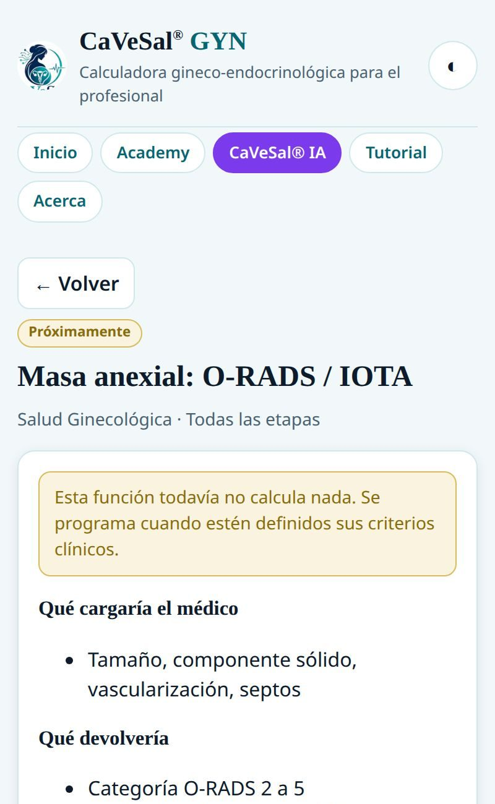

Antes de empezar
Qué es CaVeSal® GYN y para quién es
Qué es
CaVeSal® GYN es una calculadora gineco-endocrinológica para profesionales de la salud. Reúne funciones de fertilidad, estudio preconcepcional, climaterio y, en próximas versiones, adolescencia, anticoncepción, salud ginecológica y endocrinología.
Cada función calcula su propio resultado en el mismo bloque donde cargás los datos. No hay una pestaña de resultados aparte: lo que cambiás se recalcula al instante.
Al abrir la app por primera vez aparece el aviso legal. Marcá la casilla y tocá Aceptar para continuar.

Demo y versión completa
Demo Abierta para probar: la escala MRS, el día de ovulación con la ventana del dosaje de progesterona y la Calculadora de THM con el algoritmo SEGIRP 2026.
Versión completa Suma el momento del trigger según el esquema de inducción, el panel hormonal preconcepcional y todas las funciones que se vayan agregando, sin costo extra.
En la Demo, arriba aparece un aviso amarillo con el botón Activar versión completa. Las funciones cerradas muestran la etiqueta Versión completa y, al abrirlas, un candado con los enlaces de compra.


Instalar y activar
Abrí cavesal.app/cavesal-gyn/ en el navegador del celular o la computadora.
Para tenerla como app: en Android, menú ⋮ y Agregar a la pantalla principal. En iPhone, botón Compartir y Agregar a inicio.
Tocá Activar versión completa y escribí tu clave con el formato XXXX-XXXX-XXXX-XXXX.
La clave habilita un dispositivo. Si cambiaste de equipo o borraste los datos del navegador, usá el enlace para reactivarla.

Cómo está organizada la app
Categorías, etapa de vida y botones
Categorías y etapa de vida
La pantalla de inicio muestra seis categorías: Adolescencia, Anticoncepción, Salud Ginecológica, Fertilidad y Reproducción, Climaterio y Endocrinología. El número de cada botón indica cuántas funciones tiene.
Con el filtro Etapa de vida (adolescencia, edad fértil, climaterio y menopausia, postmenopausia) ves solo las funciones que aplican a esa etapa. Tocá Todas para volver a verlas completas.
Cada función tiene una etiqueta: Con lógica en v1 si ya calcula, o Próximamente si está en preparación.
Botones de arriba
- Inicio: vuelve a la pantalla principal.
- Academy: abre CaVeSal® Academy con las guías completas. Incluida con la versión completa.
- CaVeSal® IA: abre la IA profesional, que se adquiere aparte.
- Tutorial: este manual.
- Acerca: autoría, ecosistema, bases clínicas y aviso legal.
- El botón redondo de la esquina cambia entre tema claro y oscuro.
Funciones que ya calculan
Cada bloque muestra su resultado y sus fuentes
Fertilidad: ovulación, progesterona y trigger
Algoritmo propio CaVeSal® · Basado en: ASRM 2013 y 2020, ESHRE 2023 y 2025, MSPyBS 2025
Cargá la duración del ciclo en días: desde el primer día de una menstruación hasta el primer día de la siguiente.
Si cargás la fecha de la última menstruación, la app muestra también la fecha de ovulación y la del dosaje de progesterona.
Versión completa Elegí el esquema de inducción (clomifeno, letrozol o gonadotropinas) y el diámetro del folículo líder en milímetros.
La app indica si el folículo está en rango para el trigger, por debajo o por encima del tamaño recomendado.
Rangos del folículo líder
- Clomifeno: 20 a 28 mm, con mejores tasas entre 23 y 28 mm.
- Letrozol: 19 a 23 mm, tolerado hasta 28 mm.
- Gonadotropinas: 16 a 18 mm, tolerado hasta 20 mm.


Preconcepcional: semáforo, ácido fólico y panel hormonal Versión completa
Tabla adaptada del MSPBS 2022, p. 23 · OMS · ACOG/SMFM 2022 · USPSTF 2023 · CDC · Algoritmo propio CaVeSal® · Basado en: ASRM 2020 · ATA 2017
Semáforo: cargá edad, peso, talla, hemoglobina, palidez, sífilis y VIH, y marcá los criterios rojos y amarillos que tenga. Gana el color más alto. Si falta un dato obligatorio, no se clasifica en verde. Cada color muestra la conducta del MSPBS, y las ambigüedades del cuadro (35 años, Hb entre 11 y 12, IMC de 30) aparecen explicadas.
Ácido fólico: dosis según el color y las indicaciones de dosis alta (defecto del tubo neural previo, diabetes, epilepsia, IMC de 30 o más), con el momento de inicio y fin. Si marcás variante de MTHFR, muestra que no cambia la dosis ni el tipo.
Panel hormonal: todos los valores son opcionales. FSH, LH, AMH, TSH y prolactina se dosan del día 2 al 5 del ciclo; la progesterona, el día 21. La TSH se interpreta con el anti-TPO, la levotiroxina, la FIV/ICSI y el límite superior del laboratorio (4,0 si no lo informa).

Climaterio: escala MRS Demo
Basado en: Heinemann 2004 (Menopause Rating Scale)
Marcá cada uno de los 11 síntomas de 0 (ninguno) a 4 (muy severo). El total, de 0 a 44, se actualiza arriba con su grado de severidad. Debajo se ve el puntaje de cada subescala: somato-vegetativa, psicológica y urogenital.

Funciones en preparación
Se activan cuando están definidos sus criterios y su bibliografía
Próximamente
Las funciones con la etiqueta Próximamente muestran qué cargaría el médico y qué devolvería, pero todavía no calculan. Se programan una vez definidos sus criterios clínicos y sus fuentes, y llegan como actualización sin costo para la versión completa.

Academy, IA y Acerca
El resto del ecosistema CaVeSal®
Academy e IA
CaVeSal® Academy reúne las guías clínicas completas de todas las apps, incluidas las de ginecología, endocrinología y fertilidad. Está incluida con la versión completa: al tocar Academy desde la app, se abre con tu acceso.
CaVeSal® IA es la inteligencia artificial profesional. Se adquiere aparte.
Acerca
Muestra el ecosistema de apps (esta en versión completa y las demás en Demo), el QR para invitar a tus pacientes a CaVeSal® Mamá y CaVeSal® Mujer, los tutoriales, la autoría clínica, las bases clínicas con su bibliografía y el aviso legal.

Aviso legal y contacto
CaVeSal® GYN es una herramienta de apoyo a la decisión clínica dirigida exclusivamente a profesionales de la salud. No diagnostica ni reemplaza el juicio clínico. La mención de ASRM, ESHRE, ATA, OMS, FIGO y otras instituciones tiene fines de atribución bibliográfica; ninguna patrocina, avala ni certifica CaVeSal®.
El software, el diseño, los textos y la lógica están protegidos por la Ley N.º 1328/1998 de Paraguay y el Convenio de Berna.
Consultas: drverasalerno@gmail.com
Actualizado: noviembre de 2026 · © 2026 CaVeSal® · Dr. Carlos Vera Salerno